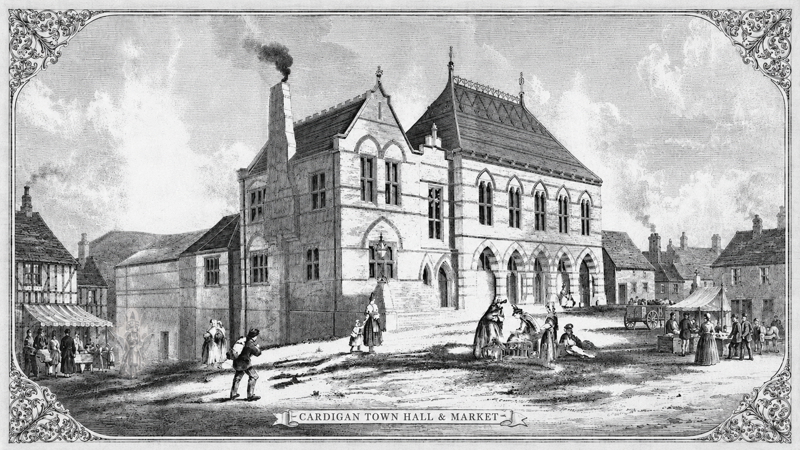
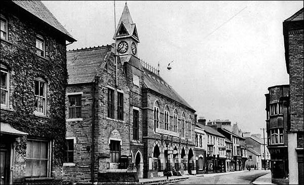
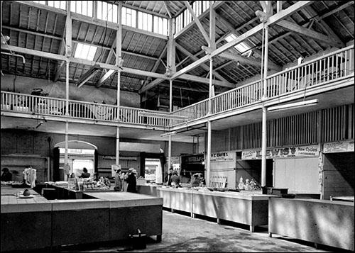
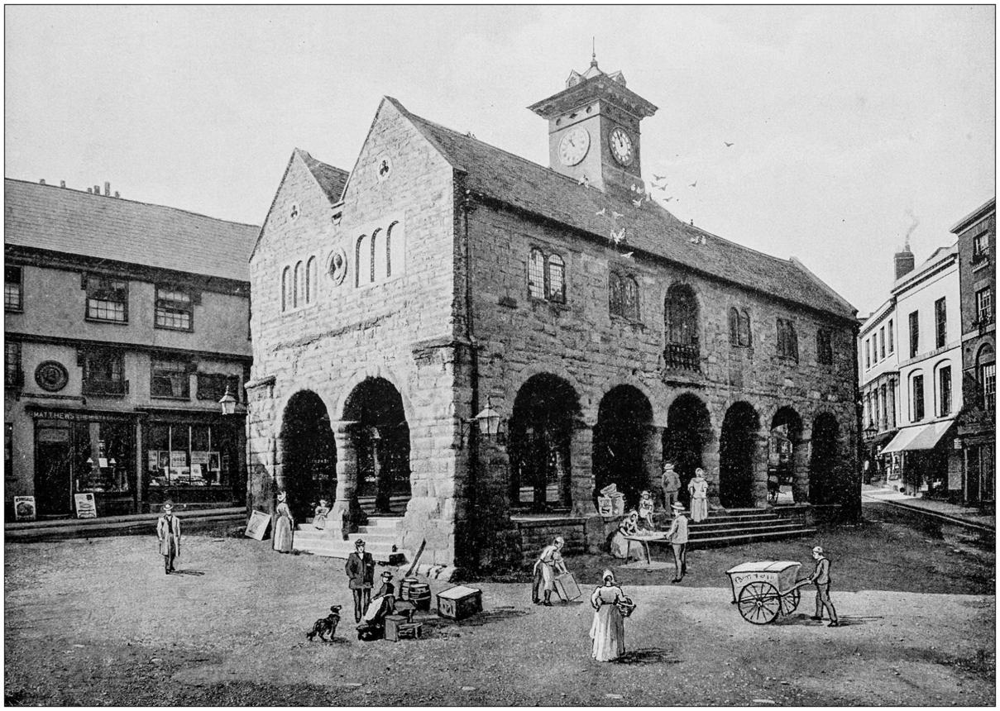
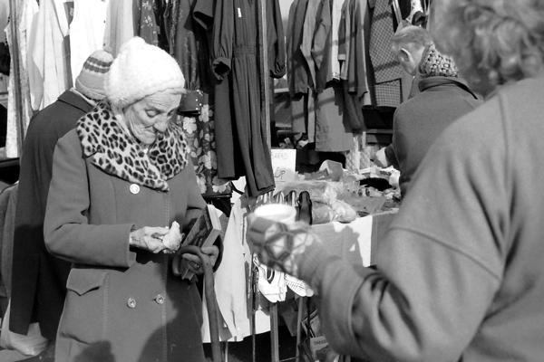
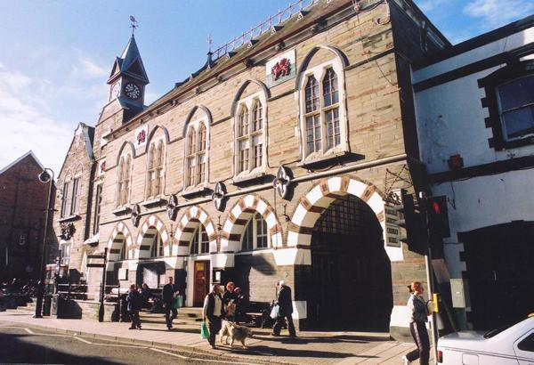
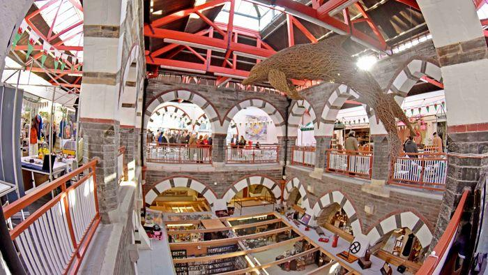

[HISTORY TAGLINE: A brief statement about the market's rich heritage and legacy]

The Guildhall Market has been an important part of Cardigan for generations, serving as both a marketplace and a community gathering space. Originally established during the 19th century, the Guildhall was created to support local trade, provide indoor market space for businesses, and strengthen the growing town centre. Its central location quickly made it an important destination for local farmers, traders, and residents.
Over the years, the market has continued to evolve while still maintaining its historic character and strong connection to the local community. Although the building and the types of businesses inside have changed over time, the market has always remained focused on supporting independent traders, local products, and community activity. Today, it combines traditional market culture with modern businesses, helping keep the town centre active and welcoming.
During the mid-1800s, Cardigan continued to grow as an important market town in West Wales. The Guildhall building was developed to provide a dedicated indoor space where local traders, farmers, and businesses could sell their goods more efficiently. Its construction helped strengthen local trade and created a central meeting place for the community.
By the early 1900s, the market had become a busy part of daily life in Cardigan. More traders began using the Guildhall to sell produce, household goods, clothing, and food to local residents and visitors. The market continued to grow in popularity as the town developed, helping support local businesses and creating more opportunities for independent traders.
Following the Second World War, the market adapted to changing shopping habits and modern business needs. Improvements were gradually made to the building, while new types of stalls and businesses began appearing inside the Guildhall. The market remained an important social and commercial space where local people could continue supporting independent traders during a period of rebuilding and change across the UK.
During the 1980s, efforts were made to preserve and improve the historic Guildhall building while keeping it active for modern use. Refurbishments helped maintain the structure and improve facilities for traders and visitors. The market also became more community-focused, supporting local events, small businesses, and creative independent vendors.
As technology and shopping habits changed, the market continued adapting to modern expectations. New independent businesses, food vendors, craft stalls, and artisan traders began joining the Guildhall, helping attract a wider range of visitors. The market also developed a stronger online and social media presence to promote events, vendors, and community activities to both locals and tourists.
Today, the Guildhall Market remains one of the most recognisable and important parts of Cardigan. The market is home to a variety of independent vendors selling fresh food, handmade crafts, jewellery, gifts, clothing, artwork, and locally inspired products. It continues to support local businesses while giving visitors a welcoming place to shop, explore, eat, and connect with the local community.
A collection of historic photographs showcasing the market's journey through time






[HISTORY CTA: Invite visitors to continue the market's legacy by visiting, becoming a vendor, or joining the community]